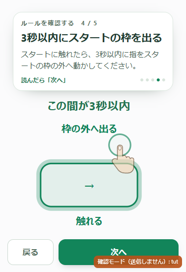
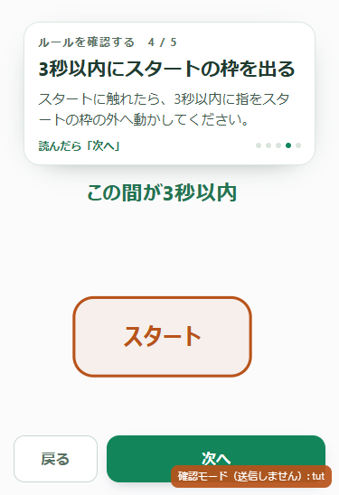
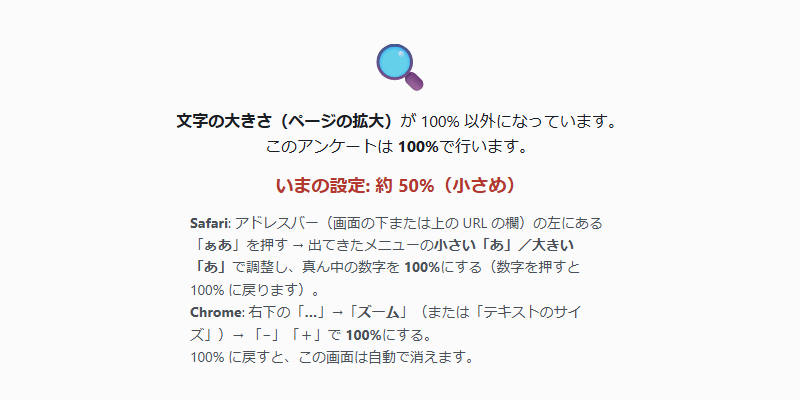
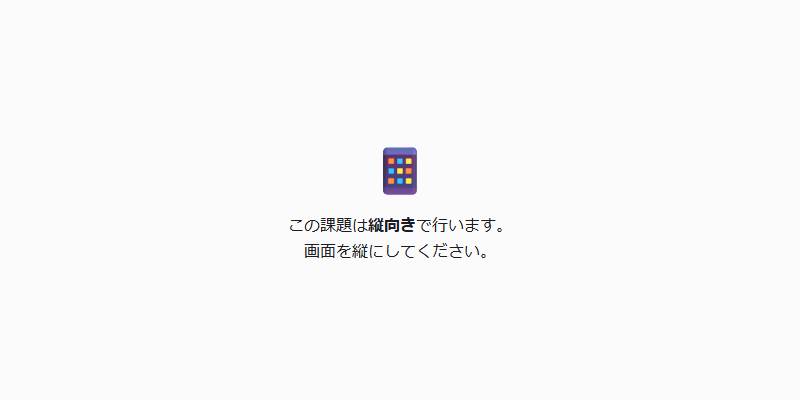

問題文・操作の注意・説明と見本
追加調整：文字が消えてからスタートへ戻す
「触れる」「枠の外へ出る」が見えている間は、ボタン内の矢印と緑色を保ちます。2つの文字が消えると同時に「スタート」と通常色へ戻り、0.3秒待って次の接触を始めます。
最新の実演を開く（送信なし） · 追加65項目の検証 · 今回の全体検証


以下は、先に実施した表示調整の比較記録です。
問題文の枠は14pxの角丸へ。操作練習の赤い注意は、選択肢とスタートの間の余白の中央へ移しています。2つの実演は説明の下に置き、3秒の実演には接触と枠外の表示を付けています。
横向きでは縦に戻す案内を優先し、キーボードによる高さ変化と区別しています。
画像はChromeのタッチ表示です。iPhone Safari実機の確認とは区別します。問題文の紹介では強調アニメーションを同じ位相で静止し、通常課題では部品の寸法を比較しています。
検証結果 · 再生成用テスト · 横向き判定の検証 · 横向き判定テスト
375 × 548
問題文の紹介


通常の課題


スタート以外に触れた注意


変更後の余白：選択肢から 34.8px ／ スタートまで 34.9px
枠外で離した注意


変更後の余白：選択肢から 34.8px ／ スタートまで 34.9px
枠の内側で離す見本


3秒の実演：触れる


3秒の実演：枠の外へ出る


375 × 700
問題文の紹介


通常の課題


スタート以外に触れた注意


変更後の余白：選択肢から 75.6px ／ スタートまで 75.6px
枠外で離した注意


変更後の余白：選択肢から 75.6px ／ スタートまで 75.6px
枠の内側で離す見本


3秒の実演：触れる


3秒の実演：枠の外へ出る


402 × 759
問題文の紹介


通常の課題


スタート以外に触れた注意


変更後の余白：選択肢から 94.1px ／ スタートまで 94.1px
枠外で離した注意


変更後の余白：選択肢から 94.1px ／ スタートまで 94.1px
枠の内側で離す見本


3秒の実演：触れる


3秒の実演：枠の外へ出る


横向きの案内
端末が横向きでもscreenの幅・高さが縦向きの値を返す場合を再現しました。変更後は縦に戻す案内を優先します。


横向きの検証 · 全体889項目の検証 · 再現方法